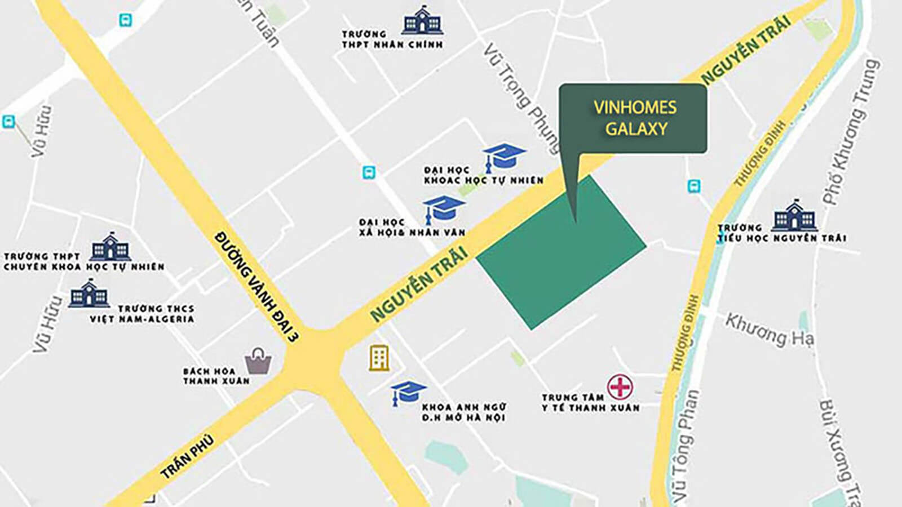
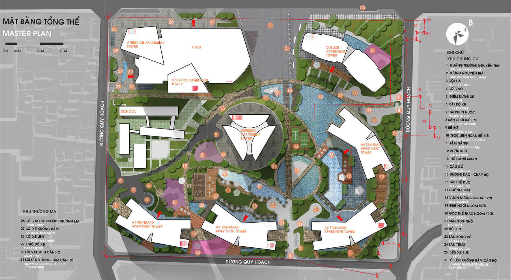
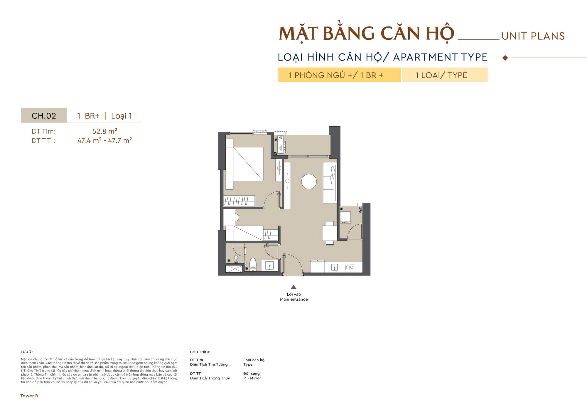
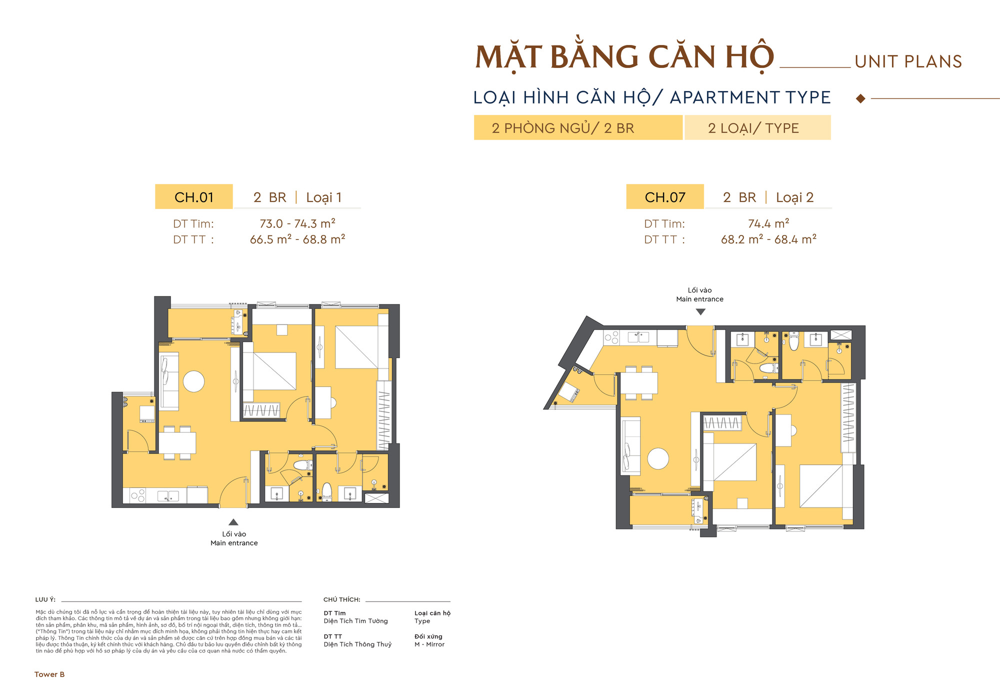
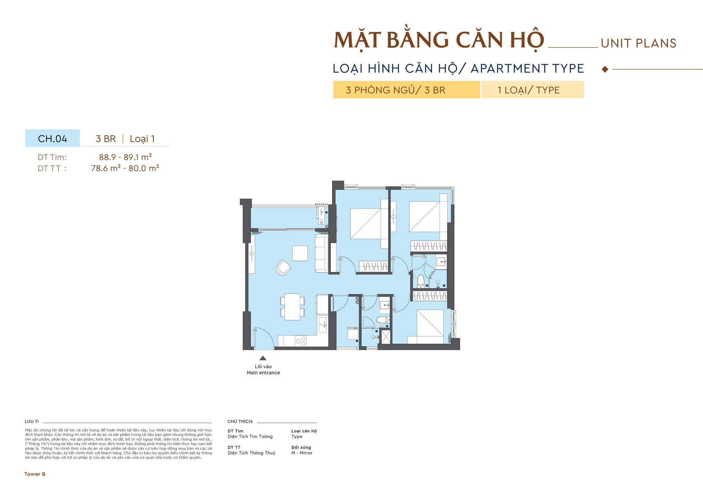
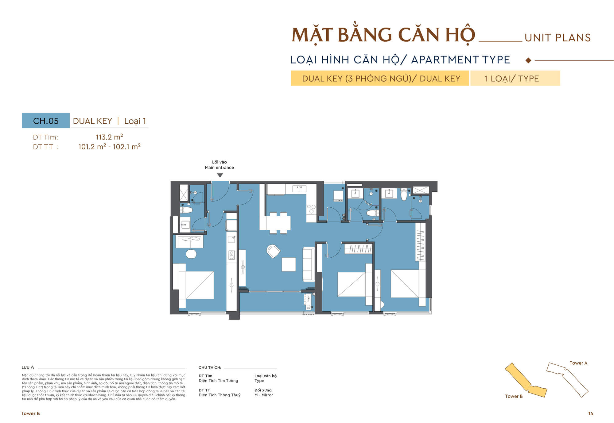

Vinhomes Cao Xà Lá: tổng quan dự án và góc nhìn giúp bạn chọn căn phù hợp
Vinhomes Cao Xà Lá, còn được biết đến với tên Vinhomes Galaxy, là dự án được quan tâm tại khu Nguyễn Trãi - Thanh Xuân. Điểm đáng chú ý của dự án nằm ở khu đất lớn hiếm có trong nội đô, vị trí kết nối thuận tiện và hệ thống tiện ích dân sinh đã hình thành xung quanh.
Với lợi thế nằm trong khu vực có nhu cầu an cư cao, Cao Xà Lá phù hợp với nhiều mục tiêu khác nhau: mua để ở, mua để tích lũy tài sản hoặc đầu tư cho thuê trong vài năm tới. Tuy nhiên, quyết định chọn căn vẫn cần dựa trên bảng giá, mặt bằng, chính sách và khả năng tài chính thực tế.
Vì sao người mua tìm kiếm Cao Xà Lá nhiều?
Tại Hà Nội, những dự án có quy mô lớn trong khu vực nội đô không còn nhiều. Phần lớn nguồn cung mới phải dịch chuyển ra các khu vực xa hơn như phía Tây, phía Đông hoặc các khu đô thị xa trung tâm. Trong bối cảnh đó, một dự án nằm trên trục Nguyễn Trãi, gần Royal City, Ngã Tư Sở, Trường Chinh và tuyến metro có khả năng tạo được sự chú ý ngay từ giai đoạn đầu.
Người mua nhà hiện nay không chỉ quan tâm đến căn hộ đẹp. Điều quan trọng hơn là khả năng sống thuận tiện trong 5-10 năm: đi làm mất bao lâu, con đi học có tiện không, người lớn tuổi có dễ tiếp cận y tế không, khu vực có bị phụ thuộc vào một tuyến đường duy nhất không, căn hộ có dễ cho thuê hoặc bán lại khi cần đổi nhà hay không. Vinhomes Cao Xà Lá được quan tâm vì chạm đúng các nhu cầu đó.
Tổng quan Vinhomes Cao Xà Lá
| Tên dự án thường được tìm kiếm: | Vinhomes Cao Xà Lá / Vinhomes Galaxy |
| Khu vực: | Trục Nguyễn Trãi, Thanh Xuân, Hà Nội |
| Quy mô khu đất tham khảo: | Khoảng 11 ha tại khu đất Cao Xà Lá; thông số cuối cùng cần đối chiếu theo hồ sơ mở bán từng giai đoạn |
| Số tòa dự kiến: | Khoảng 9-11 tòa cao tầng, tùy phương án quy hoạch được công bố ở từng thời điểm |
| Loại hình quan tâm: | Căn hộ cao tầng, shophouse khối đế, sản phẩm thương mại dịch vụ tùy quy hoạch từng giai đoạn |
| Diện tích căn hộ dự kiến: | 1PN khoảng 45-55 m²; 2PN khoảng 65-85 m²; 3PN khoảng 90-120 m²; căn lớn/duplex có thể từ khoảng 120 m² trở lên |
| Nhóm khách hàng chính: | Mua ở nội đô, mua cho con, mua để tích lũy tài sản, đầu tư cho thuê trong vài năm tới |
| Lợi thế nổi bật: | Vị trí trong khu trung tâm, hạ tầng sẵn có, kết nối nhiều hướng, thương hiệu phát triển được thị trường nhận diện mạnh |
| Yếu tố cần kiểm tra: | Bảng giá, pháp lý, tiến độ, tiêu chuẩn bàn giao, chính sách thanh toán, điều kiện giữ chỗ |
| Tài liệu nên xem: | Mặt bằng tổng thể, layout căn hộ, bảng giá từng loại căn, chính sách bán hàng, tiến độ thanh toán |
Nhận bộ tài liệu trước khi so sánh căn
Tài liệu nên có trước khi quyết định gồm bảng giá, mặt bằng tổng thể, layout từng loại căn, chính sách thanh toán, danh sách căn còn phù hợp và các điều kiện giữ chỗ tại thời điểm tư vấn.
Nhìn dự án theo 3 nhóm nhu cầu thực tế
Nhóm mua để ở: ưu tiên thời gian di chuyển, môi trường sống, tiện ích cho gia đình và khả năng ở lâu dài. Với nhóm này, căn hộ tốt không nhất thiết là căn rẻ nhất mà là căn phù hợp nhất với sinh hoạt hằng ngày.
Nhóm mua cho con hoặc mua để tích lũy tài sản: quan tâm đến độ ổn định của khu vực, khả năng giữ giá, khả năng cho thuê trong thời gian chưa sử dụng và khả năng bán lại khi cần bán lại.
Nhóm đầu tư: cần tính toán bằng số liệu: giá mua ban đầu, tiền vay, tiền cho thuê hằng tháng, chi phí nội thất, thời gian trống phòng, phí quản lý hằng tháng và mức tăng giá kỳ vọng. Không nên chỉ dựa vào câu chuyện “vị trí đẹp” nếu giá mua ban đầu quá cao so với tiền cho thuê thực tế.
Vị trí Vinhomes Cao Xà Lá: nằm trong khu đô thị phát triển, mang lại nhiều lợi thế vượt trội.

Vị trí là phần tạo ra khác biệt lớn nhất của Vinhomes Cao Xà Lá. Dự án nằm trong khu vực Nguyễn Trãi - Thanh Xuân, nơi có mật độ dân cư cao, hoạt động thương mại sôi động và hệ thống tiện ích đô thị đã hình thành từ lâu. Đây là điểm khác biệt quan trọng so với nhiều dự án vùng ven, nơi người mua phải chờ thêm nhiều năm để tiện ích và cộng đồng cư dân hoàn thiện.
Từ khu vực Cao Xà Lá có thể tiếp cận nhanh các hướng chính: về Hà Đông qua Nguyễn Trãi - Trần Phú, về Đống Đa - Cầu Giấy qua Trường Chinh - Láng, về Hai Bà Trưng - Hoàn Kiếm qua Giải Phóng, hoặc kết nối các khu vực phía Nam thành phố thông qua vành đai và các tuyến trục hiện hữu.
Kết nối giao thông đáng chú ý
- Nguyễn Trãi - Trần Phú: trục kết nối Thanh Xuân với Hà Đông, đồng thời là tuyến có lưu lượng thương mại lớn.
- Ngã Tư Sở - Trường Chinh - Láng: hướng di chuyển quan trọng đến Đống Đa, Cầu Giấy, khu văn phòng phía Tây.
- Giải Phóng - Kim Đồng: kết nối về Hai Bà Trưng, Hoàn Kiếm và khu vực phía Nam Hà Nội.
- Metro Cát Linh - Hà Đông: tạo thêm lựa chọn di chuyển công cộng cho cư dân khu vực Nguyễn Trãi.
- Hệ tiện ích hiện hữu: Royal City, bệnh viện lớn, trường đại học, siêu thị, chợ dân sinh và chuỗi cửa hàng dịch vụ đã có sẵn.
Điểm cần nhìn thẳng về vị trí
Khu Nguyễn Trãi - Ngã Tư Sở là khu vực trung tâm nên lưu lượng giao thông cao, đặc biệt vào giờ đi làm và tan tầm. Vì vậy, khi đánh giá vị trí, cần nhìn theo tuyến di chuyển thực tế chứ không chỉ theo khoảng cách trên bản đồ. Một gia đình làm việc tại Thanh Xuân, Đống Đa, Cầu Giấy hoặc Hà Đông có thể thấy vị trí này rất thuận tiện. Ngược lại, nếu lịch trình hằng ngày thường xuyên đi xa về phía Đông hoặc phía Bắc thành phố, cần tính toán kỹ hơn.
Giá trị vị trí đối với đầu tư cho thuê
Nhu cầu thuê quanh Thanh Xuân có nhiều nguồn: sinh viên quốc tế, chuyên gia, gia đình trẻ, người làm việc tại khu văn phòng phía Tây, bác sĩ - nhân sự y tế, giảng viên và nhóm khách cần thuê căn hộ gần trung tâm. Đây là nhu cầu thuê tốt cho căn 1 phòng ngủ và 2 phòng ngủ. Tuy nhiên, hiệu quả đầu tư vẫn phụ thuộc vào giá mua ban đầu, chi phí hoàn thiện nội thất và mức giá thuê thực tế tại thời điểm bàn giao.
Tiện ích Vinhomes Cao Xà Lá: không chỉ là danh sách, mà là chất lượng sống mỗi ngày

Với căn hộ cao tầng, tiện ích có hai tầng giá trị. Tầng thứ nhất là giá trị sử dụng hằng ngày: cư dân có nơi đi bộ, tập luyện, mua sắm, đưa đón con, gặp gỡ bạn bè và xử lý các nhu cầu thường ngày. Tầng thứ hai là giá trị tài sản: một dự án có tiện ích quản lý tốt thường dễ cho thuê hơn, giữ hình ảnh tốt hơn và có lợi thế khi bán lại.
Các dự án mang thương hiệu Vinhomes thường được thị trường nhớ đến nhờ hệ thống tiện ích và quản lý vận hành chuyên nghiệp. Tuy vậy, người mua vẫn nên kiểm tra cụ thể tiện ích nào được triển khai trong từng giai đoạn, tiện ích nào thuộc nội khu, tiện ích nào là tiện ích khu vực và mức phí quản lý hằng tháng dự kiến sau bàn giao.
Nhóm tiện ích quan trọng với gia đình mua để ở
- Không gian xanh và đường dạo bộ: giúp cư dân có nơi thư giãn mà không cần di chuyển xa.
- Khu vui chơi trẻ em: cần được bố trí an toàn, dễ quan sát và tách biệt hợp lý với luồng xe.
- Phòng tập, bể bơi, sân thể thao: tăng giá trị sử dụng hằng ngày, đặc biệt với cư dân trẻ.
- Dịch vụ thương mại khối đế: siêu thị, cafe, nhà thuốc, cửa hàng tiện lợi và dịch vụ thiết yếu.
- An ninh, lễ tân, kiểm soát ra vào: ảnh hưởng trực tiếp đến trải nghiệm sống và cảm giác riêng tư.
Những câu hỏi nên đặt ra khi xem tiện ích
Tiện ích đẹp trên phối cảnh chưa đủ để kết luận dự án đáng mua. Cần đặt các câu hỏi thực tế: mật độ cư dân trên mỗi tòa là bao nhiêu, số thang máy có đủ không, tầng hầm để xe có đáp ứng nhu cầu không, lối đi bộ có tách khỏi xe cơ giới không, khu vui chơi trẻ em có đủ bóng mát không, tiện ích có thu phí riêng không và đơn vị quản lý sau bàn giao là ai.
Nhận tư vấn chọn căn theo nhu cầu sử dụng
Mỗi nhóm khách hàng cần một loại căn khác nhau. Tư vấn chọn căn nên dựa trên số người ở, ngân sách, hướng di chuyển, nhu cầu vay và mục tiêu mua ở hoặc đầu tư.
Mặt bằng Vinhomes Cao Xà Lá: lựa chọn cách bố trí căn hộ phù hợp quan trọng hơn chỉ dựa vào diện tích.
Mặt bằng là phần cần xem kỹ nhất trước khi giữ chỗ. Hai căn hộ có cùng diện tích nhưng trải nghiệm sử dụng có thể khác nhau hoàn toàn nếu một căn vuông vắn, ít hành lang chết, phòng ngủ có ánh sáng tốt, bếp thoáng và logia hợp lý; trong khi căn còn lại bị vát góc, thiếu chỗ để đồ hoặc có hướng nắng gắt.
Người mua nên xem cả mặt bằng tầng và layout căn hộ. Mặt bằng tầng cho biết vị trí căn so với thang máy, hành lang, phòng rác, khe kỹ thuật, hướng nhìn và khoảng cách đến căn đối diện. Layout căn hộ cho biết công năng bên trong có phù hợp với nhịp sinh hoạt thực tế hay không.
Căn 1 phòng ngủ
- Căn 1 phòng ngủ phù hợp với người độc thân, cặp đôi mới cưới, khách mua cho con học đại học hoặc nhà đầu tư cho thuê.
- Diện tích tham khảo thường khoảng 45–55 m².
- Điểm mạnh của dòng căn này là tổng giá thường dễ tiếp cận hơn, đồng thời nhu cầu thuê ổn định nếu vị trí thuận tiện.
- Khi chọn căn 1 phòng ngủ, nên ưu tiên phòng khách có ánh sáng tốt, bếp gọn gàng, phòng ngủ không quá bí và khu giặt phơi tách biệt.

Căn 2 phòng ngủ
- Căn 2 phòng ngủ thường là sản phẩm có nhu cầu lớn nhất tại nhiều dự án căn hộ vì phù hợp với gia đình trẻ, cặp vợ chồng có con nhỏ hoặc nhóm khách thuê chuyên gia.
- Diện tích tham khảo thường khoảng 65–85 m².
- Khi lựa chọn, cần xem kỹ các yếu tố như: diện tích phòng ngủ phụ, số lượng nhà vệ sinh, vị trí bếp, logia và hướng ban công.
- Một căn 2 phòng ngủ tốt nên có không gian sinh hoạt chung đủ rộng, phòng ngủ phụ không quá nhỏ và luồng di chuyển trong nhà hợp lý.

Căn 3 phòng ngủ
- Căn 3 phòng ngủ phù hợp với gia đình có hai con, gia đình nhiều thế hệ hoặc khách hàng muốn không gian sống rộng hơn trong nội đô.
- Diện tích tham khảo thường khoảng 90–120 m².
- Với dòng căn này, nên ưu tiên căn góc, phòng ngủ có cửa sổ, phòng khách rộng, bếp không quá gần cửa chính và có đủ không gian lưu trữ.
- Nếu mua để ở lâu dài, nên chọn căn có hướng nhìn thoáng và hạn chế ảnh hưởng tiếng ồn từ các trục đường lớn.

Duplex, penthouse và căn diện tích lớn: mua vì trải nghiệm sống khác biệt
- Các căn diện tích lớn thường dành cho nhóm khách hàng có yêu cầu cao về không gian, tầm nhìn, sự riêng tư và tính sở hữu.
- Đây không phải dòng sản phẩm nên mua chỉ vì kỳ vọng tăng giá nhanh.
- Cần kiểm tra kỹ chi phí quản lý hằng tháng và phí bảo trì để đảm bảo phù hợp khả năng tài chính.
- Xem xét tiêu chuẩn bàn giao, thiết kế thang trong căn (nếu là duplex), khả năng cải tạo nội thất và tính thanh khoản khi cần chuyển nhượng.

Checklist xem mặt bằng trước khi để lại thông tin
- Vị trí căn trên mặt bằng tầng: gần thang máy, phòng rác, khe kỹ thuật hay trục ồn không.
- Hướng ban công và hướng cửa: có phù hợp thói quen sinh hoạt, ánh sáng và thông gió không.
- Layout bên trong: có diện tích chết, hành lang dài, phòng ngủ thiếu sáng hoặc bếp bí không.
- Tầm nhìn: nhìn nội khu, nhìn thành phố, nhìn sang tòa đối diện hay bị che chắn.
- Khả năng bán lại: loại căn có nhu cầu lớn trên thị trường thứ cấp hay chỉ hợp một nhóm khách hẹp.
Tiêu chuẩn bàn giao: chi tiết nhỏ quyết định trải nghiệm sử dụng
Khi mua căn hộ cao cấp, tiêu chuẩn bàn giao cần được đọc kỹ như một phần quan trọng của quyết định tài chính. Không nên chỉ nghe mô tả chung như “cao cấp” hoặc “full nội thất”. Cần biết chính xác hạng mục nào được bàn giao, thương hiệu thiết bị là gì, phần nào là nội thất liền tường, phần nào phải tự hoàn thiện thêm và chính sách bảo hành ra sao.
Những chi tiết nên kiểm tra gồm sàn, cửa, trần, thiết bị vệ sinh, tủ bếp, bếp, hút mùi, điều hòa, bình nóng lạnh, thiết bị điện, hệ thống chống cháy, đầu chờ internet, vị trí cục nóng, khu giặt phơi và khả năng thoát mùi. Đây là các yếu tố ảnh hưởng trực tiếp đến chi phí hoàn thiện sau nhận nhà.
- Đối chiếu bảng tiêu chuẩn bàn giao theo từng dòng căn.
- So sánh chi phí nội thất rời nếu mua để ở và nếu mua để cho thuê.
- Kiểm tra chính sách bảo hành thiết bị, bảo trì căn hộ và quy trình xử lý lỗi sau bàn giao.
- Ước tính thêm chi phí rèm, đèn, tủ rời, giường, sofa, máy giặt, tủ lạnh và thiết bị gia dụng.
Giá bán Vinhomes Cao Xà Lá: cần nhìn theo tổng chi phí phải trả
Giá bán là phần được tìm kiếm nhiều nhất nhưng cũng dễ gây hiểu nhầm nhất. Một mức giá theo m2 chưa phản ánh đầy đủ giá trị căn hộ. Cần xem tổng giá trị căn, số tiền cần thanh toán ban đầu, tiến độ thanh toán, chính sách vay, lãi suất sau ưu đãi, phí bảo trì, chi phí nội thất và chi phí quản lý hằng tháng.
Với một dự án ở khu trung tâm, giá mở bán thường chịu ảnh hưởng bởi vị trí, thương hiệu, tiến độ, chính sách tài chính và sức mua của thị trường. Nếu giá mua ban đầu hợp lý so với các dự án đã bàn giao quanh Thanh Xuân - Đống Đa - Hà Đông, dự án có lợi thế cạnh tranh. Nếu giá mua ban đầu quá cao, nhà đầu tư cần tính toán kỹ hơn về dòng tiền thuê và mức tăng giá trong trung hạn.
| Loại căn | Nhóm khách phù hợp | Cần kiểm tra trước khi chọn |
|---|---|---|
| 1PN | Người độc thân, cặp đôi, mua cho thuê | Khoảng 45-55 m²; tổng giá, view, khả năng thuê, chi phí nội thất |
| 2PN | Gia đình trẻ, khách mua để ở, nhà đầu tư cân bằng | Khoảng 65-85 m²; layout, số WC, ban công, hướng nắng, khả năng bán lại |
| 3PN | Gia đình nhiều thành viên, mua ở lâu dài | Khoảng 90-120 m²; căn góc, diện tích phòng khách, phòng ngủ phụ, tiếng ồn |
| Căn lớn | Khách hàng ưu tiên trải nghiệm sống cao cấp | Phí quản lý hằng tháng, mức riêng tư, tiêu chuẩn bàn giao, khả năng bán lại |
Cách tính ngân sách an toàn
Với người mua để ở, khoản trả nợ hằng tháng nên được tính theo phương án an toàn, đặc biệt sau giai đoạn ưu đãi lãi suất. Một căn hộ tốt nhưng tạo áp lực tài chính quá lớn có thể làm giảm chất lượng sống. Vì vậy, cần tính trước thu nhập ổn định, khoản dự phòng, chi phí sinh hoạt, học phí, bảo hiểm, phí quản lý và các khoản phát sinh sau nhận nhà.
Với nhà đầu tư, cần tính hiệu quả cho thuê theo phương án thực tế: giá thuê dự kiến, thời gian trống phòng, chi phí môi giới, phí quản lý, nội thất, sửa chữa, thuế và lãi vay. Lợi nhuận không nên chỉ tính bằng kỳ vọng tăng giá mà phải gắn với khả năng cho thuê hoặc sử dụng căn hộ.
Chính sách bán hàng cần kiểm tra
- Số tiền giữ chỗ và điều kiện hoàn tiền.
- Thời điểm chuyển cọc, ký văn bản thỏa thuận hoặc hợp đồng.
- Tiến độ thanh toán từng đợt và tỷ lệ thanh toán khi nhận nhà.
- Ưu đãi thanh toán sớm, hỗ trợ lãi suất, ân hạn nợ gốc nếu có.
- Điều kiện áp dụng ưu đãi, thời hạn ưu đãi và các khoản phí đi kèm.
Có nên mua Vinhomes Cao Xà Lá để ở hoặc đầu tư?
Không có dự án nào phù hợp với tất cả mọi người. Vinhomes Cao Xà Lá đáng quan tâm nếu nhu cầu ưu tiên là vị trí nội đô, kết nối thuận tiện, tiện ích đồng bộ và khả năng mua căn hộ trong khu vực đã có sẵn nhịp sống. Tuy nhiên, quyết định mua nên dựa trên bảng giá thực tế, loại căn cụ thể và khả năng tài chính của từng khách hàng.
5 lý do dự án có sức hút
- Vị trí trong khu trung tâm: thuận tiện cho nhóm khách cần ở gần trung tâm, trường học, bệnh viện và khu văn phòng.
- Hạ tầng khu vực đã hình thành: không phụ thuộc hoàn toàn vào tiện ích tương lai.
- Nhu cầu an cư lớn: Thanh Xuân là khu vực có mật độ dân cư cao và nhu cầu nâng cấp chỗ ở rõ rệt.
- Khả năng cho thuê có nền tảng: gần trường đại học, bệnh viện, trung tâm thương mại và tuyến metro.
- Khu đất lớn hiếm có trong nội đô: dự án quy mô lớn trong nội đô luôn có sức chú ý riêng.
Trước khi liên hệ tư vấn, nên chuẩn bị gì?
Để quá trình tư vấn hiệu quả, nên xác định trước ngân sách tối đa, số tiền có thể thanh toán ban đầu, khả năng vay, nhu cầu phòng ngủ, khu vực làm việc hằng ngày, mục tiêu mua ở hay đầu tư và mức chấp nhận rủi ro. Khi có các thông tin này, tư vấn viên có thể lọc căn phù hợp nhanh hơn thay vì gửi bảng hàng quá rộng.
Câu hỏi thường gặp về Vinhomes Cao Xà Lá
Vinhomes Cao Xà Lá có phù hợp mua để ở không?
Phù hợp nếu nhu cầu chính là sống trong khu vực Thanh Xuân - Nguyễn Trãi, cần kết nối nội đô tốt và ưu tiên tiện ích đồng bộ. Cần kiểm tra thêm giá, chính sách và loại căn cụ thể.
Nên chọn căn 1PN, 2PN hay 3PN?
Căn 1PN phù hợp đầu tư cho thuê hoặc nhu cầu ở nhỏ. Căn 2PN cân bằng nhất giữa nhu cầu sử dụng và khả năng bán lại. Căn 3PN phù hợp gia đình muốn ở lâu dài và cần không gian rộng.
Giá bán nên so sánh với dự án nào?
Nên so sánh với các dự án đã bàn giao hoặc đang bán quanh Thanh Xuân, Royal City, Ngã Tư Sở, Hà Đông, Đống Đa và các dự án Vinhomes có vị trí, tiện ích tương đương.
Thông tin trên website có phải thông tin giao dịch cuối cùng không?
Thông tin trên website mang tính tham khảo. Giá bán, chính sách, tiến độ, pháp lý và tiêu chuẩn bàn giao cần được đối chiếu với tài liệu cập nhật tại thời điểm giao dịch.